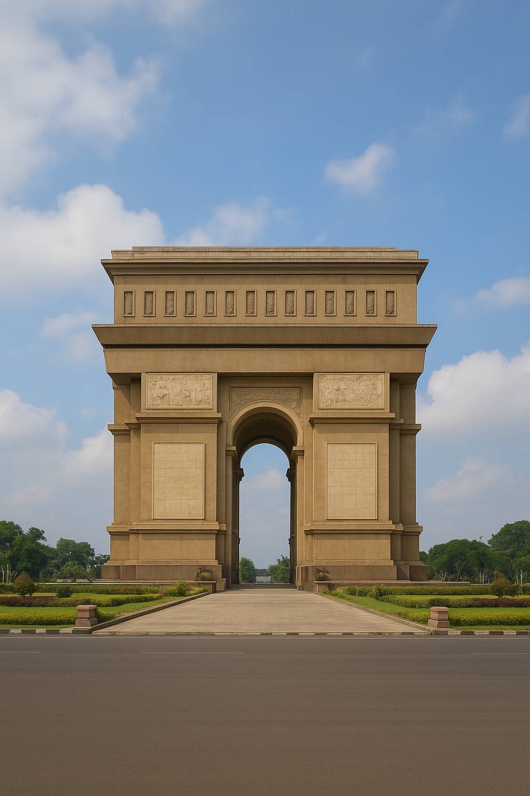

Jelajahi Kekuatan UMKM Lokal Kediri
Temukan berbagai produk unggulan dan layanan terbaik dari Usaha Mikro, Kecil, dan Menengah di Kediri. Dukung ekonomi lokal, temukan kualitas terbaik.
Lihat Produk Unggulan
Monumen Simpang Lima Gumul
Ikon kebanggaan Kabupaten Kediri yang megah dan penuh sejarah.

Telusuri Berdasarkan Kategori
Temukan dengan cepat jenis UMKM yang Anda cari. Kami memuat berbagai sektor usaha dari seluruh wilayah.
Kuliner & Minuman
1200+ UMKM
Kriya & Kerajinan Tangan
750+ UMKM
Fesyen & Aksesori
920+ UMKM
Lihat Semua Kategori
Semua UMKM
Produk Unggulan Pilihan
Lihat UMKM dan produk yang sedang populer dan mendapat rating terbaik dari pengguna.
Alamat Kami:
Jalan Ir. Sutami No.16, Banjaran, Kec. Kota, Kota Kediri, Jawa Timur 64182